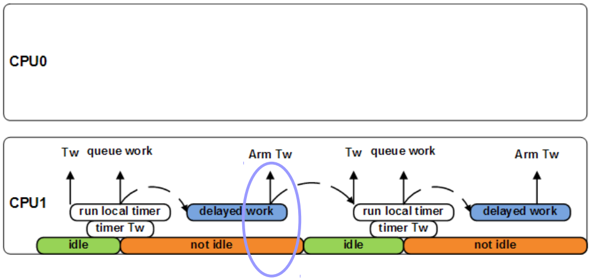

Power-efficient workqueues were first introduced in the Linux kernel release 3.11 and few (50+) subsystems and drivers were updated to use them later on. These workqueues can be quite useful in case of handheld devices (like tablets and smartphones), where we want to be power efficient all the time.
ARM platforms with power-efficient workqueues enabled on Ubuntu and Android have shown significant improvements in energy consumption (up to 15% for some use cases on ARM big LITTLE platforms). They are worth trying if you care for power.
Workqueues (wq) are the most common bottom-half mechanism used in the Linux
kernel for cases where asynchronous execution context is required. The
asynchronous execution context is provided by the worker kernel threads. These
workers are woken up once a work item is queued on them. The workqueue is
represented by the struct workqueue_struct and the work item is represented by
the struct work_struct. The work item points to a function, which is called by
the worker (in process context) to execute the work. Once the worker has
finished processing all the work items queued on the workqueue, it becomes idle.
The most common APIs used to queue a work are:
bool queue_work(struct workqueue_struct *wq, struct work_struct *work);
bool queue_work_on(int cpu, struct workqueue_struct *wq, struct work_struct *work);
bool queue_delayed_work(struct workqueue_struct *wq, struct delayed_work *dwork, unsigned long delay);
bool queue_delayed_work_on(int cpu, struct workqueue_struct *wq, struct delayed_work *work, unsigned long delay);The first two APIs queue the work immediately, while the other two queue it up
after delay jiffies have passed since the time the APIs are called. The work
queued by queue_work_on() (and queue_delayed_work_on()) is executed by the
worker thread running on a specific CPU only. Whereas, the work queued by
queue_work() (and queue_delayed_work()) can be run by any CPU in the system
(though it doesn’t really happen that way, described later).
A fairly common use-case of workqueues in kernel is to repetitively queue the work from the work function, as we need to do some task periodically.
Below shows example code for this use-case:
static void foo_handler(struct work_struct *work)
{
struct delayed_work *dwork = to_delayed_work(work);
/* Do some work here */
/* Queue the work again */
queue_delayed_work(system_wq, dwork, 10);
}
void foo_init(void)
{
struct delayed_work *dwork = kmalloc(sizeof(*dwork), GFP_KERNEL);
if (!dwork)
return;
INIT_DEFERRABLE_WORK(dwork, foo_handler);
/* Queue work after 10 jiffies */
queue_delayed_work(system_wq, dwork, 10);
}foo_init() allocated the delayed work and queued it for 10 jiffies delay and
the work handler (foo_handler()) performed the periodic work and queued the
work again. One may think that the work will be executed on any CPU (whichever
the kernel finds to be most appropriate). But that’s not really true.
The workqueue core will most likely queue it on the local CPU, unless the local
CPU isn’t part of the global wq_unbound_cpumask (i.e. Mask of CPUs which are
allowed to execute work that isn’t queued to a particular CPU). For an octa-core
platform, the work from the above example will get executed only on CPU-X
every time. Even if that CPU was idle and some of the other 7 CPUs were not.
The below figure shows this problem:

Figure 1. The workqueue pinning problem
The delayed work was first queued by code running on CPU1. The CPU became idle
and went to a low power state. After 10 jiffies, the timer Tw (internally used
by delayed work infrastructure) fired on CPU1 and brought it out of the low
power state. The dwork.work is queued from the timer handler and is serviced
very soon by a worker thread running on CPU1. The work handler (foo_handler())
queued the delayed work again, which internally re-armed the timer Tw to fire
after 10 jiffies. The CPU had nothing else to do and went into low power state
again. And again the timer Tw brought it out of the low power state after
10 jiffies.
It is probably fine (from power-efficiency point of view) if the CPU was doing
some work while being interrupted by the timer Tw. But if the CPU is brought
out of idle only to service the timer and queue the work, it can be very bad
from power-efficiency point of view. The CPU can be in a deep idle state (deeper
the state, more is the penalty), or the CPU can be part of a cluster where all
CPUs are in low power state (and hence the cluster).
This pinning isn’t probably good performance wise as well in certain cases, as
the selected CPU may not be the best available CPU to run foo_handler(). Over
that, the scheduler wouldn’t be able to load balance this work with other CPUs
and the response time of the foo_handler() may increase if the target CPU is
currently busy.
There are some benefits of this pinning behavior though. If the foo_handler()
operates on significant amount of data, it may be better to keep it executing
on the same CPU every time as the caches would already be hot and we wouldn’t
have unnecessary cache misses. Though there are fairly small number of such
cases where the handlers operate on such data.
The power-efficient workqueue infrastructure is disabled by default. And it can be enabled in two ways:
Enable CONFIG_WQ_POWER_EFFICIENT in configuration file.
Pass workqueue.power_efficient=true in boot arguments.
workqueue.power_efficient=false can also be used to disable them if enabled
in the configuration file.
Once the power-efficient workqueue functionality is enabled, a workqueue can be
made power-efficient by passing WQ_POWER_EFFICIENT flag to the
alloc_workqueue() helper while allocating the workqueue. Internally the
workqueue core marks the workqueue as WQ_UNBOUND, if power-efficient workqueue
feature is enabled.
Instead of queuing work on the local CPU, the workqueue core asks the scheduler
to provide the target CPU for the work queued on unbound workqueues (i.e. Ones
that have WQ_UNBOUND set in their flags). And the work doesn’t get pinned to a
CPU anymore.
But does the scheduler picks the best CPU from power-efficiency point of view ? Not always.
The scheduler algorithm responsible for picking the next CPU for a task is quite complex, and we can’t possibly add every detail in this article. But more likely than not, the scheduler picks the idlest (least busy) CPU from the CPUs at the last cache level. For a multi cluster platform, it will most likely pick a CPU from the same cluster. But if the work handler doesn’t finish up quickly, load balancing will happen and that will move the task to other (possibly idle) CPUs.
That isn’t very power-efficient then, isn’t it ? Yeah, with the current design of Linux kernel scheduler, we may not get the best results with power-efficient workqueues. There is ongoing work (strongly pushed by the ARM community) to make the scheduler more power-aware and power-efficient and power-efficient workqueues will be very useful then.
Currently, they are quite useful (from power-efficiency point of view) with the Android kernel as that carries some scheduler modifications to make it energy aware.
As said earlier, power-efficient workqueues also make load balancing possible for these work items with the upstream kernel and that can be good in some cases for sure (where we wouldn’t have unnecessary cache misses).
There are two system level workqueues that set necessary flag to make them
power-efficient: system_power_efficient_wq and
system_freezable_power_efficient_wq. And these can be used if you don’t need a
private workqueue for your use-case.
Testing was done on 32 bit ARM big LITTLE (heterogeneous) platform (4 LITTLE Cortex A7 cores and 4 big Cortex A15 cores. Audio was played in background using aplay while rest of the system was fairly idle. Linaro’s ubuntu-devel distribution was used and the kernel also had some out of tree scheduler changes (Task placement patches discussed over LKML then).
The results across multiple test iterations showed average improvement of 15.7 %
in energy consumption with the power-efficient workqueues enabled. The unit of
the numbers shown here is Joules.
Vanila Kernel Vanila Kernel
+ scheduler patches + scheduler patches + power-efficient wq
A15 cluster 0.322866 0.2289042
A7 cluster 2.619137 2.2514632
Total 2.942003 2.4803674With the mainline kernel, the power-efficient workqueues will give better results today as well (as the scheduler picks the best target CPU) and it is going to further improve as and when the scheduler gets more energy aware.
You should try enabling it for your platform if you care for power.
Last updated 2017-08-11 17:09:52 IST